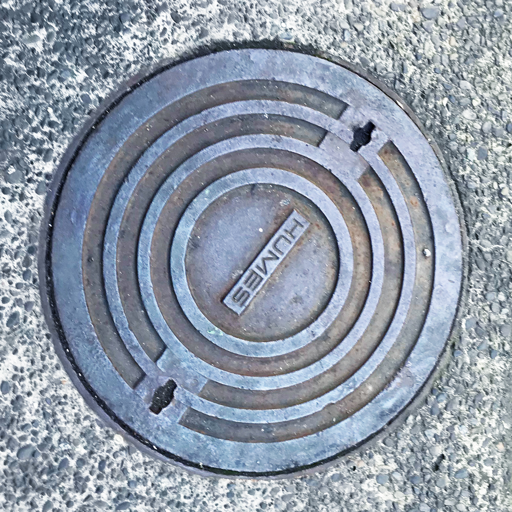
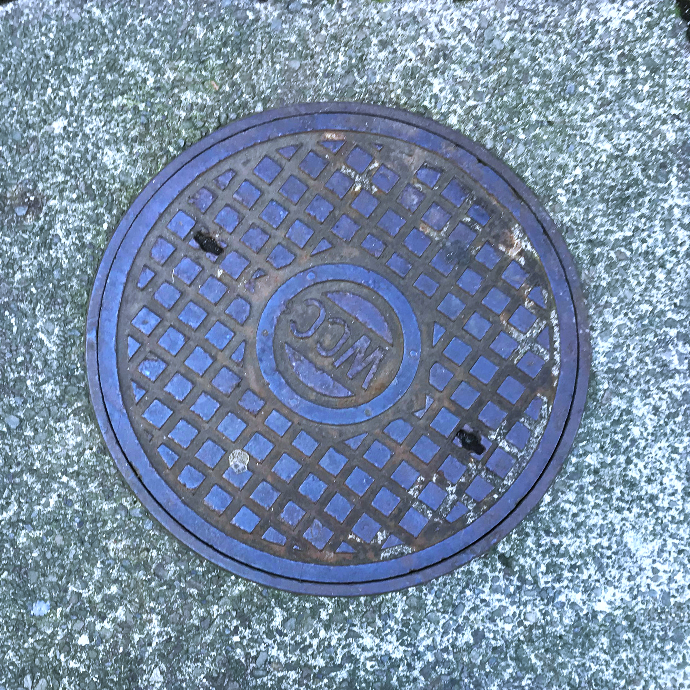

Manholes
Along with cameras, Manhole Covers can also be found around the city. Since they are situated on the ground, most of us never actually take notice and are unaware of their importance. Beneath these covers are gateways to underground networks of cables, which allow us to send data to and from our homes and connect us to the rest of the world.
Wellington City Council
This is a manhole cover belonging to the Wellington City Council. This can be shown through the text around the design.

Humes
This is a manhole cover which belongs to the company Humes. They can be found around the CBD area part of Wellington.

Wellington City Council
Here is another design of the Wellington City Council manhole cover, hence the WCC that is printed and is part of the design of the manhole.
Manhole Cover
This is a manhole which provides access to electricity, which is evident from the writing on top of it that states "Danger Electricity".